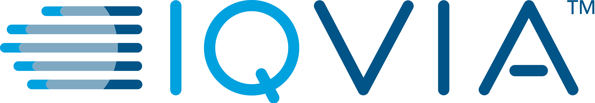

Yue Yu

Taken in Anchorage, Alsaka
Room E1317, CODA Building
756 W Peachtree St NW, Atlanta, GA 30308
Hello! I am a final-year PhD student at School of Computational Science and Engineering, Georgia Institute of Technology. I mainly work on the intersection of Large Language Models and Data-centric AI.
Before joining Georgia Tech, I obtained my bachelor’s degree (with honors) from the Department of Electronic Engineering, Tsinghua University in 2019, where I have also worked on spatio-temporal data mining under the supervision of Dr. Yong Li.
Feel free to drop me an email (yueyu at gatech dot edu) if you have any questions about my research, or general discussions about NLP.
Educations


Industrial Experience
- Meta (May 2024 - Aug 2024)
-
 Research Intern, GenAI (Llama Post-training Team)
Research Intern, GenAI (Llama Post-training Team)
- Host: Rui Hou, Manager: Melanie Kambadur
- Topic: Self-Critiquing Reward Models [Preprint].
- NVIDIA (Jan 2024 - May 2024)
-
 Research Intern, Applied Deep Learning Research Group
Research Intern, Applied Deep Learning Research Group
- Host: Wei Ping, Manager: Mohammad Shoeybi
- Topic: LLM Instruction Fine-tuning for Zero-shot Retrieval-Augmented Generation [NeurIPS 2024].
- Google Research (May 2023 - Aug 2023)
-
 Research Intern, News Understanding Group
Research Intern, News Understanding Group
- Host: Jiaming Shen, Manager: Jialu Liu
- Topic: LLM In-context Learning with Rationales [ACL 2024].
- Microsoft Research (May 2021 - Aug 2021)
-
 Research Intern, Productivity and Intelligence Group
Research Intern, Productivity and Intelligence Group
- Mentor: Chenyan Xiong, Manager: Arnold Overwijk
- Topic: Zero-shot Dense Text Retrieval [EMNLP 2022].
- IQVIA (May 2020 - Aug 2020)
-  Research Intern, Analytics Center of Excellence
- Mentor: Cao (Danica) Xiao
- Topic: Knowledge-enhanced Drug Interaction Prediction [Bioinformatics 2021].
News
| Sep 25, 2024 | Two papers are accepted to NeurIPS 2024 and Three papers are accepted to EMNLP 2024. Congratulations! |
|---|---|
| May 16, 2024 | 6 papers are accepted to ACL 2024 (4 Main Conf, 2 Findings). |
| Oct 25, 2023 | Honored to receive the NeurIPS 2023 Scholar award! |
| Sep 22, 2023 | 3 papers are accepted to NeurIPS 2023. Thanks for my collaborators! |
| May 16, 2023 | Checkout the recent publications: 2 first-author papers are accepted to ACL 2023 (1 Main Conf, 1 Findings), and 3 coauthored papers are accepted to KDD 2023. Thanks and Congratulations for my collaborators! |